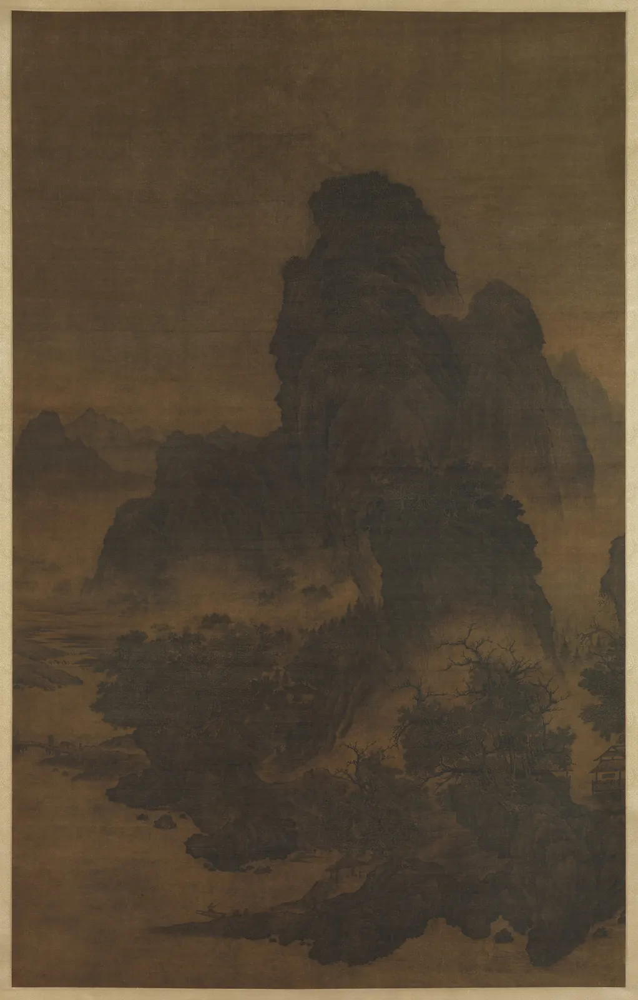
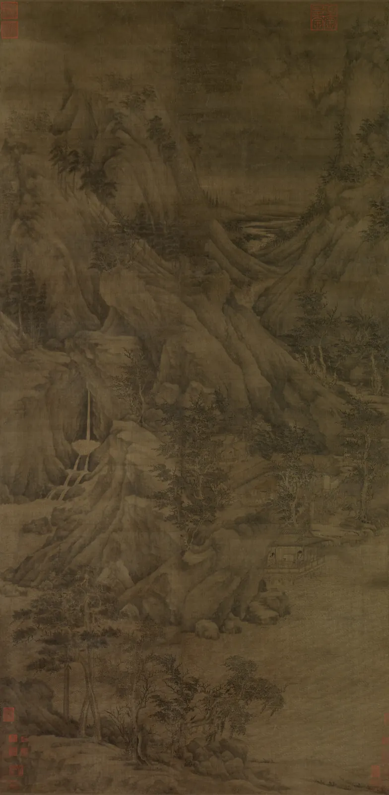
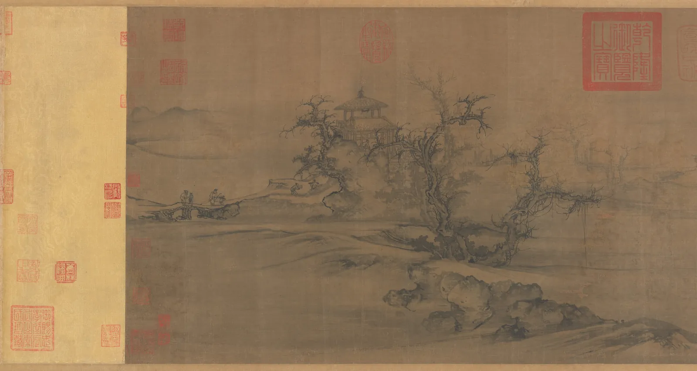
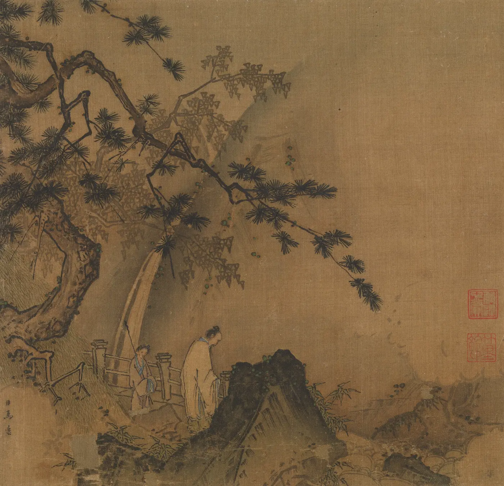
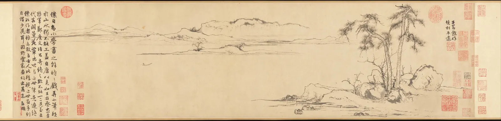
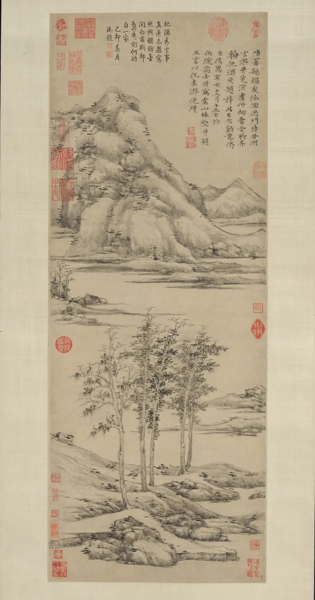
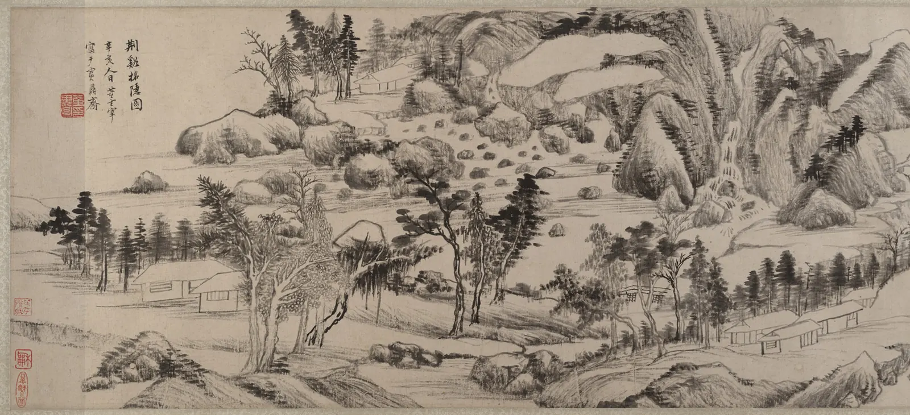
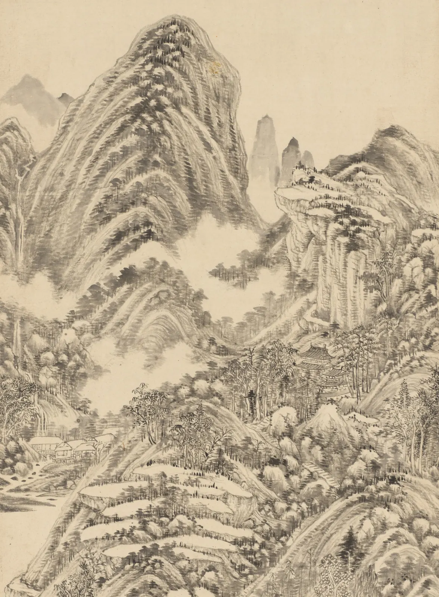

동아시아 회화
미술관의 중국 회화 전시실에 들어서면 대개 유리장 안에 긴 두루마리가 끝까지 펼쳐져 있다. 그런데 이 그림들은 원래 그렇게 보라고 만든 것이 아니다. 두루마리는 탁자 위에서 오른쪽부터 어깨 폭만큼씩 펼치고, 본 부분은 다시 감으며 왼쪽으로 나아가는 그림이다. 족자는 손님이 올 때나 계절이 바뀔 때 벽에 걸었다가 다시 말아 두었다. 그림 위의 글씨와 붉은 도장은 "훼손"이 아니라 수백 년 동안 그림을 본 사람들이 남긴 대화다. 이 장은 동아시아 회화를 서양 회화와 비교해 무엇이 "없는지" 묻는 대신, 그 그림이 스스로 세운 약속, 곧 보는 방식과 공간과 붓과 먹의 문법에서 출발한다.
- 족자, 두루마리, 화첩의 보는 방식과 제발·인장이 화면의 일부가 되는 이유를 설명한다.
- 오대·북송에서 남송, 원, 명, 청으로 이어지는 중국 산수화의 큰 흐름을 대표 작품과 함께 말한다.
- 곽희의 삼원과 족자의 위아래 읽기를 작품의 먹 분포에서 확인한다.
- 필묵(붓과 먹)과 준법(산과 바위의 살결을 그리는 선)을 직접 그어 보고, 작품에서 찾는다.
- 문인화의 생각과 남종·북종 구분이 무엇을 드러내고 무엇을 가리는지 측정값과 견주어 판단한다.
그림을 보는 방식부터 다르다
동아시아 회화의 판형은 보는 몸짓을 정한다. 세로로 긴 족자(Hanging scroll, 掛軸)는 벽에 걸고 아래의 물가에서 위의 먼 산으로 시선을 올린다. 옆으로 긴 두루마리(Handscroll, 手卷)는 탁자에 놓고 오른쪽에서 왼쪽으로 펼친다. 한 사람 또는 두세 사람이 함께 보는 크기다. 여러 장을 묶은 화첩(Album, 畫帖)은 책처럼 넘기고, 부채에 그린 선면(Fan painting, 扇面)은 손에 들고 본다. 세로쓰기 글씨가 오른쪽 줄부터 읽히듯, 두루마리의 시간도 오른쪽에서 시작한다.
북송의 화가 곽희(郭熙, Guo Xi)의 말을 아들 곽사가 엮은 『임천고치』(林泉高致)는 좋은 산수화를 "걸어갈 만한 곳, 바라볼 만한 곳, 노닐 만한 곳, 살 만한 곳"(可行·可望·可遊·可居)이 있는 그림이라고 했다. 산수화는 창밖의 한 장면을 옮기는 그림이기보다, 보는 사람이 그 안으로 들어가 거닐도록 짠 그림이라는 뜻이다. 그보다 훨씬 앞선 5세기의 종병(宗炳)은 늙어 산에 갈 수 없게 되자 산수를 그려 방에 걸고 누워서 노닐었다고 전한다. 이것을 와유(臥遊, 누워서 노닐기)라고 한다. 두루마리를 펼치는 일은 바로 그 걸음이다.
천 년의 큰 흐름
산수화가 회화의 중심 장르가 된 것은 대략 10세기, 당이 무너진 뒤의 오대(907–960)부터다. 화북의 형호와 관동, 강남의 동원과 거연이 큰 산과 강남의 부드러운 물가를 각각 그렸다. 북송(960–1127)에서는 범관, 이성, 곽희가 화면을 압도하는 거대한 산, 이른바 "기념비적 산수"를 세웠다. 수도가 남쪽 항저우로 옮긴 남송(1127–1279)의 화원(궁정 화가들의 기관)에서는 마원과 하규가 화면의 한쪽 구석에 경물을 몰고 나머지를 안개로 비우는 서정적인 화면을 만들었다. 몽골이 다스린 원(1271–1368)에서는 관직에 나가지 않은 문인 화가들이 그림을 자기 마음을 적는 글씨처럼 다루었다. 명(1368–1644)에서는 쑤저우의 문인 화가들(오파)과 궁정·직업 화가들(절파)이 공존했고, 명 말의 동기창이 화가들의 계보를 다시 짰다. 청(1644–1912)에서는 그 계보를 따르는 정통파와, 거기서 벗어난 개성적인 화가들이 함께 활동했다.

족자는 아래에서 위로 읽는다. 가까운 물가와 나무는 짙은 먹으로 또렷하게, 먼 산은 옅은 먹으로 흐리게 그리는 것이 보통이다. 정말 그런지 그림의 먹에서 직접 재 본다. 아래 시뮬레이터는 족자를 가로로 40개의 띠로 나눠, 띠마다 바탕보다 얼마나 어두운지(먹의 양)와 밝기가 얼마나 흩어져 있는지(대비)를 오른쪽 그래프에 그린다. 그래프 위의 손잡이를 끌어 한 띠를 고른다.
족자를 아래에서 위로: 높이에 따른 먹
"먼 것은 옅게"는 출발점이지 규칙이 아니다. 범관 양식은 먼 주봉을 무겁게 세우고 안개 띠로 거리를 끊고, 예찬은 강의 띠를 비워 넓이를 만들며, 왕시민은 위로 갈수록 옅게 쌓아 규칙을 충실히 따른다. 동원의 그래프는 숫자가 그림의 생각만이 아니라 재료의 역사도 함께 잰다는 것을 보여 준다. 천 년 가까이 된 비단은 고르게 바래지 않는다. 그래프를 읽을 때는 그림이 거쳐 온 시간도 함께 읽어야 한다.

삼원: 세 가지 거리
『임천고치』는 산을 보는 세 가지 거리를 이렇게 정리한다. 산 아래에서 산꼭대기를 올려다보는 것을 고원(高遠), 산 앞에서 산 뒤를 엿보는 것을 심원(深遠), 가까운 산에서 먼 산을 바라보는 것을 평원(平遠)이라 한다(自山下而仰山巔謂之高遠, 自山前而窺山後謂之深遠, 自近山而望遠山謂之平遠). 곽희는 고원의 기세는 우뚝하고, 심원의 뜻은 겹겹이 이어지며, 평원은 아득히 퍼진다고 덧붙였다. 이것은 소실점의 규칙이 아니라 시점의 종류다. 한 화면 안에 셋이 함께 있어도 된다.

남송에 이르면 공간의 강조점이 바뀐다. 마원은 경물을 화면의 한쪽 모서리에 몰고 나머지를 비워 "마일각"(馬一角, 한 모서리의 마원), 하규는 화면의 반쪽만 채워 "하반변"(夏半邊, 반쪽의 하규)이라는 별명을 얻었다. 북송의 산이 보는 사람을 압도했다면, 남송의 화면은 그림 속 인물과 함께 빈 곳을 바라보게 한다. 빈 곳은 아무것도 없는 곳이 아니라 안개와 물, 소리와 시간이 있는 곳이다(CompositionBook의 여백).

필묵: 붓과 먹이 곧 그림
동아시아 회화에서 붓과 먹은 형태를 옮기는 도구이기 전에 그 자체로 감상의 대상이었다. 6세기 남제의 사혁(謝赫)이 『고화품록』(古畫品錄)에서 정리한 그림의 여섯 가지 법, 곧 육법(六法)은 천 년 넘게 그림을 평가하는 말이 되었다.
| 육법 | 대략의 뜻 | 이 장에서 보는 곳 |
|---|---|---|
| 기운생동(氣韻生動) | 기운이 살아 움직인다. 가장 높은 덕목이며 가르쳐서 얻기 어렵다고 여겼다 | 전체 |
| 골법용필(骨法用筆) | 뼈대 있는 붓 쓰기. 선의 힘과 구조 | 붓 한 획 시뮬레이터 |
| 응물상형(應物象形) | 대상에 맞게 형태를 그린다 | 준법 |
| 수류부채(隨類賦彩) | 종류에 따라 색을 입힌다 | 채색 산수, 비단의 색 |
| 경영위치(經營位置) | 화면의 배치를 짠다 | 삼원, 제발의 자리 |
| 전이모사(傳移模寫) | 옛 그림을 옮겨 그려 전한다 | "~의 필의로", 정통파 |
뜻풀이는 시대마다 달라졌다. 원문은 짧고 띄어 읽는 법부터 견해가 갈린다. 다만 첫째로 꼽힌 "기운"과 둘째의 "붓 쓰기"가 이후 문인화에서 특히 중시되었다는 점은 분명하다. 먹도 한 가지가 아니다. 물을 얼마나 섞느냐에 따라 짙고 옅음이 생기고, 붓에 머금은 물이 많으면 번지고(습필), 적으면 갈라진다(갈필). 붓이 빠르게 지나가 먹이 다 묻지 않아 흰 자국이 비치는 획을 비백(飛白)이라 한다. 아래에서 직접 그어 본다.
붓 한 획: 속도, 먹, 물
붓 한 획에 속도와 압력, 먹과 물의 양이 모두 남는다. 그래서 동아시아에서 선은 형태의 가장자리이면서 그린 사람의 몸짓의 기록이었다. 같은 대나무를 그려도 누구의 대나무인지 알아볼 수 있다는 생각, 그림을 "쓴다"(寫)고 말하는 습관이 여기서 나온다. 붓의 종류와 선의 성격은 DrawingBook의 선에서도 다룬다.
준법: 산의 살결을 그리는 선
산수화에서 바위와 산의 표면, 곧 결과 주름과 덩어리를 나타내는 붓질의 유형을 준법(皴法, Texture strokes)이라 한다. 서양 소묘의 해칭이 빛의 양을 선의 밀도로 쌓는다면, 준법은 산의 지질과 질감, 덩어리의 방향을 선의 종류로 말한다. 준법에는 계보가 있어서, 어떤 준법을 쓰느냐가 곧 어느 대가를 잇느냐를 뜻했다.
| 준법 | 모양 | 어울리는 산 | 대표 화가 |
|---|---|---|---|
| 피마준(披麻皴) | 삼베 올을 풀어 놓은 듯한 길고 부드러운 선 | 강남의 흙산 | 동원, 거연, 황공망 |
| 우점준(雨點皴) | 빗방울 같은 짧은 점과 획을 촘촘히 | 화북의 거대한 바위산 | 범관 |
| 부벽준(斧劈皴) | 넓은 붓을 눕혀 도끼로 찍은 듯한 모난 획 | 깎아지른 바위 | 이당, 마원, 하규 |
| 절대준(折帶皴) | 옆으로 긋다 꺾어 내리는 띠 모양의 획 | 평평한 바위 언덕 | 예찬 |
| 미점(米點) | 옆으로 누운 먹점을 겹겹이 | 비에 젖은 산 | 미불, 미우인 |
준법의 이름은 후대에 정리된 분류여서, 실제 그림에서는 여러 준법이 섞이고 경계가 흐릿하다. 아래 시뮬레이터에서 돋보기를 끌어 네 그림의 바위와 산을 확대한다. 오른쪽에는 돋보기 안의 붓질 방향 분포가 그려진다. 이름표보다 먼저 눈으로, 그다음 숫자로 결을 비교한다.
돋보기로 준법 찾기
준법을 알면 그림 앞에서 "이 바위는 누구의 말로 그렸는가"를 물을 수 있다. 원 이후의 화가들은 그림에 "동원의 필의로", "황공망을 본떠" 같은 글을 적어, 지금 어느 선배와 대화하는지 밝혔다. 이것은 베끼기가 아니라 인용과 변주다. 육법의 마지막 "전이모사"가 하찮은 기술이 아니었던 이유다.
문인화: 그린 사람이 보이는 그림
북송의 문인 소식(蘇軾, 소동파)은 그림을 겉모습이 닮았는지로 논하는 것은 아이의 견해와 다를 바 없다고 읊었다(論畫以形似, 見與兒童鄰). 관직에 있는 학자들, 곧 문인(文人, Scholar-official)이 여가에 그리는 그림은 직업 화가의 정밀한 묘사와 달리 그린 사람의 인품과 생각을 드러내야 한다는 주장이다. 이런 생각으로 그린 그림을 문인화(文人畫, Literati painting)라고 한다. 시와 글씨와 그림을 한 사람이 함께 다루는 것을 이상으로 여겨 "시서화"(詩書畫)를 함께 말했다.
원의 조맹부(趙孟頫, 1254–1322)는 송 황실의 후손이면서 원 조정에 나가 관직을 지낸 복잡한 인물이고, 당대 최고의 서예가였다. 그는 한 그림의 제시에서 돌은 비백처럼, 나무는 전서(籀)처럼 그리고, 대나무에는 서예의 팔법이 통해야 하며, 이것을 아는 사람은 글씨와 그림이 본래 같다는 것을 알리라고 썼다(石如飛白木如籀, 寫竹還應八法通. 若也有人能會此, 須知書畫本來同). 그림의 선을 글씨의 획과 같은 기준으로 보는 이 생각을 흔히 서화동원(書畫同源)이라 부른다.

원 말의 예찬(倪瓚, 1306–1374)은 문인화의 극단을 보여 준다. 그는 자신이 그림이라 부르는 것은 붓 가는 대로 대충 그려 겉모습의 닮음을 구하지 않고 스스로 즐길 따름이라고 했다(逸筆草草, 不求形似, 聊以自娛耳). 그의 화면은 거의 언제나 같다. 아래쪽 물가의 바위와 몇 그루 나무, 가운데의 빈 강, 위쪽의 낮은 먼 산. 이 짜임을 일하양안(一河兩岸, 강 하나와 두 기슭)이라 부른다. 사람은 그리지 않았다.

제발은 화면의 일부다. 그 자리를 옮기면 그림의 균형이 바뀌는지 시험해 본다. 아래 시뮬레이터는 예찬의 그림에서 오른쪽 위의 글씨 덩어리를 떼어 내 옮길 수 있게 했다. 글씨 상자를 끌어 다른 자리에 놓고, 그림 전체의 먹이 어디에 모이는지(먹의 중심)를 본다. 점선 십자는 원래 자리의 먹 중심이다.
글씨를 옮겨 보기: 제발의 자리
제발을 쓴 사람은 작가만이 아니다. 친구가 감상을 적고, 수백 년 뒤의 소장자가 도장을 찍고, 황제가 시를 덧붙였다. 서양 회화에서 그림 위에 글을 쓰는 일은 대개 훼손이지만, 동아시아 두루마리와 족자에서 그것은 그림이 거쳐 온 사람들의 대화로 남는다. 도장이 너무 많아 화면을 덮는 경우에는 비판도 있었다. 그래도 이 흔적들은 누가 언제 이 그림을 보았는지 알려 주는 일차 자료다.
두루마리의 시간
두루마리를 실제 크기와 펼치는 폭으로 다시 본다. 아래 시뮬레이터는 탁자 위에 두루마리를 놓고, 오른쪽에서부터 정한 폭만큼만 펼친다. 왼쪽에는 아직 보지 않은 부분이, 오른쪽에는 이미 본 부분이 감겨 있다. 화면을 왼쪽에서 오른쪽으로 끌면 왼쪽을 풀고 오른쪽을 감는다. 아래의 작은 띠는 전체에서 지금 보는 자리다.
두루마리 펼치기: 오른쪽에서 왼쪽으로
한눈에 펼친 두루마리는 편하지만 다른 그림이 된다. 화가는 펼치는 폭 안에서 장면이 시작되고 끝나도록, 빈 물과 안개를 장면 사이의 쉼표로 배치했다. 쌍송평원도의 가운데를 거의 비워 둔 것도, 펼치는 사람이 소나무를 감아 넣고 빈 물을 지나는 동안 숨을 고르게 하는 시간이다. 이것은 영화의 장면 전환이나 만화의 칸 넘김과 닮았지만, 그보다 훨씬 오래된 시간의 화면이다.

남종과 북종: 이름표의 힘과 한계
명 말의 동기창(董其昌, 1555–1636)과 그 주변의 문인들은 선종 불교가 남종과 북종으로 갈린 이야기에 빗대어, 산수화가들도 두 계보로 나눴다. 남종화(南宗畫, Southern school)는 당의 왕유에서 시작해 동원, 거연, 미불 부자를 거쳐 원의 네 대가(황공망, 오진, 예찬, 왕몽)로 이어지는 문인의 계보이고, 북종화(北宗畫, Northern school)는 당의 이사훈 부자의 채색 산수에서 송의 조백구와 마원, 하규로 이어지는 계보다. 동기창은 남종을 높였다. 깨달음에 단번에 이르는 남종선처럼, 문인의 그림은 기술의 축적이 아니라 교양과 인품에서 나온다는 것이다.
이 구분은 큰 영향을 남겼다. 청의 정통파는 남종 계보를 그림의 정도로 삼았고, 조선 후기와 에도 시대 일본에서도 "남종화"(일본에서는 "남화")가 문인 취향의 대명사가 되었다. 그러나 한계도 분명하다.
- 지리가 아니다. 남종·북종은 화가의 출신지가 아니라 선종에 빗댄 계보다. 북쪽 출신의 남종 화가, 남쪽 출신의 북종 화가가 있다.
- 가치 판단이 섞여 있다. "문인 대 직업 화가", "교양 대 기술"이라는 사회적 위계가 양식의 이름에 덧씌워졌다. 마원과 하규 같은 화원 화가들은 이 구도 안에서 낮게 평가되었다.
- 계보는 사후에 짠 것이다. 왕유의 진작은 동기창의 시대에도 확실한 것이 거의 없었고, 범관이나 곽희처럼 어느 쪽에도 깔끔히 들어가지 않는 대가도 있다.

이름표가 그림의 눈에 보이는 성질을 얼마나 가르는지 직접 재 본다. 아래 시뮬레이터는 이 장의 그림 열 점에서 먹의 대비, 여백의 비율, 결의 정렬도, 평균 채도를 뽑아 두 축 위에 찍는다. 점의 색은 동기창 계보에서의 자리다. 파랑은 남종(또는 남종을 이었다고 자처함), 주황은 북종, 회색은 그 계보에 이름이 오르지 않은 그림이다. 점을 누르면 어느 그림인지 보인다.
이름표와 측정값
종합: 산수화 무대
지금까지의 요소를 한 화면에 모아 직접 짜 본다. 아래 무대는 족자 한 폭에 산수를 그린다. 구도를 고원, 평원, 심원, 일하양안 가운데 고르고, 산의 살결을 준법으로 고르고, 여백(안개와 물)의 양을 정한다. 주봉의 손잡이를 끌어 산의 높이와 자리를 옮긴다. 아래 숫자는 그려진 화면에서 다시 잰 값이다.
산수화 무대: 구도·준법·여백
어떤 조합이 "맞는" 산수화는 아니다. 곽희는 평원과 고원을 한 화면에 함께 쓰라고 했고, 예찬은 평생 같은 짜임을 되풀이하며 그 안에서 미세한 변주를 했으며, 동기창은 자연을 닮지 않은 구성을 일부러 택했다. 산수화의 문법은 정답표가 아니라, 무엇을 전하려는가에 따라 고르는 말의 목록이다.
서윤의 작업 노트
9회차: 50센티미터씩, 오른쪽에서 왼쪽으로
10월 30일 토요일, 9회차. 지난주 참가자의 질문("동양화는 처음부터 평면이었는데, 그걸 뒤처졌다고 하면 안 되지 않느냐")이 서윤의 준비를 바꿨다. 처음 만든 슬라이드는 「쌍송평원도」 전체 사진을 한 화면에 띄우고 "서양 그림과 무엇이 다른가"를 묻는 것이었다. 한도경은 노트북 화면을 손바닥으로 가렸다. "이건 미술관 진열장 방식이야. 원래는 이렇게 안 봐. 펼쳐야 해."
두 사람은 화면 위에서 두루마리를 펼치기로 했다. 그림 부분의 길이는 소장처 기록으로 107.5 cm, 높이 26.8 cm다. 2층 화면에는 높이를 26.8 cm로 맞춰 실물 크기로 띄웠다. 한 번에 펼치는 폭은 서윤이 직접 어깨 폭을 재고 탁자 위에서 팔을 벌려 본 끝에 50 cm로 정했다. 50 cm 창을 반씩(25 cm) 겹치며 오른쪽 끝에서 왼쪽으로 옮기면, 창의 오른쪽 끝은 0, 25, 50, 57.5 cm(마지막은 왼쪽 끝에 맞춤)에 놓여 모두 네 번 펼치면 끝난다. \(\lceil (107.5 - 50)/25 \rceil + 1 = 4\)이다. 서윤은 펼칠 때마다 30초씩 말없이 보고, 다음으로 넘기기 전에 "지금 무엇이 보이는가" 한 가지만 묻기로 했다.
| 펼침 | 오른쪽 끝에서(cm) | 보이는 것(이 책이 나눈 구간) | 묻는 것 |
|---|---|---|---|
| 1 | 0–50 | 소장자의 도장, 작가의 제목과 서명(雙松平遠 子昂趙作), 두 소나무와 바위 | 그림은 어디서 시작하나? |
| 2 | 25–75 | 소나무 왼쪽 끝, 빈 물, 먼 언덕의 오른쪽 | 소나무를 감으면 무엇이 남나? |
| 3 | 50–100 | 빈 물과 작은 배, 먼 언덕, 글의 시작 | 배는 어디로 가나? |
| 4 | 57.5–107.5 | 빈 물의 왼쪽과 배, 먼 언덕의 왼쪽 끝, 조맹부의 글 | 화가는 무엇이라고 썼나? |
모임에서 가장 반응이 컸던 것은 2번 펼침이었다. 소나무를 감아 넣자 화면의 대부분이 텅 빈 종이가 되었고, 정 선생님이 "아무것도 없는데 강이 보인다"고 말했다. 대학생 단골은 4번의 글을 번역해 달라고 했고, 서윤은 조맹부가 옛 대가들의 이름을 들며 "옛사람에 견줄 수는 없지만 요즘 화가들과는 조금 다르다"고 쓴 대목을 읽어 주었다. 아이와 함께 온 부모는 아이가 붉은 도장의 수를 세다가 스무 개쯤에서 포기했다고 웃었다. 도경은 그 도장 하나하나가 이 그림을 펼쳐 본 사람이라고 덧붙였다. 마지막에 서윤은 같은 그림을 한눈에 띄웠다. 몇 사람이 "이렇게 보니 오히려 작아 보인다"고 했다.
9회차의 그림은 네 점으로 정했다. 범관 양식의 산수(족자, 아래에서 위로), 조맹부 「쌍송평원도」(두루마리, 네 번 펼침), 예찬 「우산임학도」(족자, 글씨의 자리), 동기창 「형계초은도」(두루마리, 남종 이야기). 대표 읽기 카드는 이렇다.
| 읽기 카드 · 9회차 | 조맹부, 「쌍송평원도」, 1310년경 |
|---|---|
| 색 | 먹 한 가지와 종이 바탕. 붉은색은 모두 도장이다(작가와 후대 소장자). |
| 구도 | 오른쪽부터: 두 소나무(근경) → 빈 물과 배 → 먼 언덕(평원) → 작가의 글. 50 cm씩 네 번 펼친다. |
| 기법 | 마른 붓의 가는 선. 소나무 줄기와 바위를 서예의 획처럼 그었다(서화동원). |
| 질문 | 그림의 절반이 비어 있다. 그 빈 곳에는 무엇이 있나? |
핵심 정리
- 동아시아 회화는 판형이 보는 몸짓을 정한다. 족자는 아래에서 위로, 두루마리는 오른쪽에서 어깨 폭씩 펼쳐 왼쪽으로 본다. 제발과 인장은 그림을 본 사람들의 대화로 화면의 일부가 된다.
- 산수화는 오대·북송의 기념비적 산수, 남송 화원의 한쪽 구석과 여백, 원의 문인화, 명의 오파·절파와 동기창, 청의 정통파와 개성파로 이어졌다. 연대표는 진보의 계단이 아니라 서로를 인용하는 그물이다.
- 곽희의 삼원(고원·심원·평원)은 소실점의 규칙이 아니라 시점의 종류다. 높이, 겹침, 먹의 농담, 안개와 물의 여백이 거리를 만들며, "먼 것은 옅게"는 출발점일 뿐 깨지기도 한다.
- 필묵은 형태를 옮기는 도구이면서 그 자체로 감상의 대상이다. 붓의 속도와 압력, 먹과 물의 양, 종이와 비단의 성질이 한 획에 모두 남는다. 사혁의 육법은 기운과 붓 쓰기를 앞세웠다.
- 준법은 산과 바위의 살결을 선의 종류로 말한다. 피마준, 우점준, 부벽준, 절대준, 미점은 각각 지형과 대가의 계보를 품고 있으며, 실제 그림에서는 섞인다.
- 문인화는 겉모습의 닮음보다 그린 사람의 생각과 붓을 중시하고, 시서화를 한 화면에 모은다. 조맹부의 서화동원, 예찬의 일하양안이 대표적이다.
- 동기창의 남종·북종 구분은 지리가 아니라 선종에 빗댄 계보이며, 문인 대 직업 화가의 위계가 섞여 있다. 화면의 측정값으로 깔끔히 갈리지 않는다. 같은 언어는 한국과 일본에서 독자적인 전통이 되었다.
확인 퀴즈
1. 길이 107.5 cm의 두루마리를 원래 방식대로 감상하려 한다. 가장 알맞은 방법은?
2. 곽희의 『임천고치』가 말한 "평원(平遠)"에 대한 설명으로 가장 알맞은 것은?
3. 예찬의 족자에서 화면 위쪽의 글씨를 지웠더니, 먹의 중심이 아래로 내려가고 오른쪽 위가 텅 비어 보였다. 이 결과가 보여 주는 것으로 가장 알맞은 것은?
4. 동기창의 남종·북종 구분에 대한 설명으로 가장 알맞은 것은?